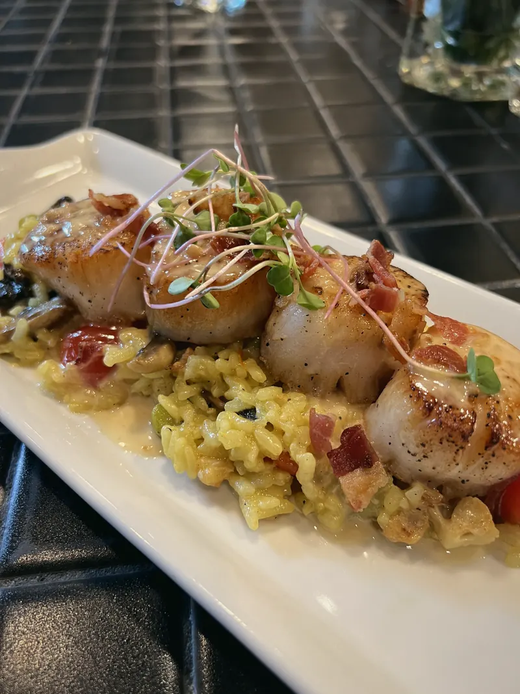
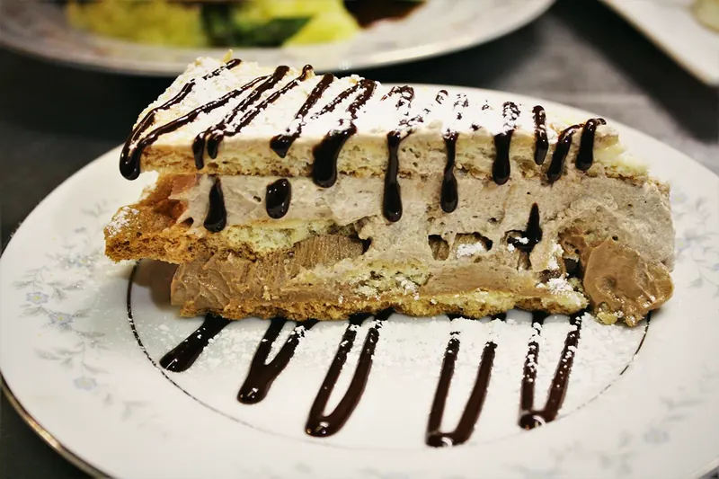

Fried Green Tomatoes
V$13Classic fried green tomatoes topped with pimento cheese, a dash of sriracha, and scallions.

A fine continental menu, crafted from the very first night in 1992 — and carried forward today by Chef Matthew Klein with Kentucky Proud ingredients.
A midday table in the Moon Garden — Kentucky classics like the Hot Brown beside lighter salads and Buck’s own burger.

Classic fried green tomatoes topped with pimento cheese, a dash of sriracha, and scallions.
Served with spinach ouzo béchamel, garnished with three cheeses and fresh parsley
Three lump crab cakes on a bed of spring mix, served with caper-basil rémoulade sauce.
Iceberg lettuce, bleu cheese dressing, bacon, dried cranberries, grape tomatoes, cucumbers
Romaine lettuce, three cheese blend, herb croutons, Caesar dressing.
Strawberries, blackberries, and raspberries, feta cheese, red onions, and candied pecans over spring mix, tossed with a blackberry vinaigrette.
Grilled chicken, rotini pasta, toasted almonds, red peppers, tossed in a mango-peach chutney, curry aioli, on a pineapple boat.
Baby greens tossed in spiced peach vinaigrette, topped with egg, prosciutto, tomato, bleu cheese crumbles, corn, diced peppers.
Ask your server for today's soup.
All sandwiches served with your choice of coleslaw, potato salad, or french fries. *(uncooked or undercooked) Consuming raw or undercooked foods may increase the risk of foodborne illness
House ground beef, Colby cheese, prosciutto, green tomato jam, spring mix, balsamic mayo, brioche bun.
Grilled chicken breast with romaine lettuce, tossed in a spicy Caesar dressing and three-cheese blend on Texas toast.
Grilled chicken with heirloom tomatoes, mozzarella, and basil pesto served open-faced on marbled rye, finished with balsamic glaze.
Panko encrusted cod, topped with coleslaw, basil caper tartar sauce, on marbled rye.
Roasted turkey, prosciutto, Swiss, on Texas toast topped with tomato and bacon finished with Mornay sauce.
5 oz. Choice filet over a potato cake, asparagus, topped with demi-glace.
Fried cod over jasmine rice, finished with sautéed bell peppers and red onions in a spicy sweet Thai-chili sauce, garnished with green onions.
Stir-fried chicken, mushrooms, red onions, baby corn, water chestnuts, snow peas, oyster-sesame sauce. Garnished with green onions.
Blackened salmon with gemelli pasta tossed in Cajun-cream sauce, onions and peppers.
Stir-fried curry chicken, bell peppers, onion, mushrooms, tossed in a spicy hoisin and Thai-chili sauce over Cantonese noodles.
Chef Matthew Klein’s continental menu, built on Kentucky Proud ingredients and served on Buck’s mismatched antique china.
Over spinach ouzo bechamel, topped with three cheese blend and parsley.
Over apple curry chutney, topped with pineapple salsa and green onions.
Tossed in a spicy maple bourbon sauce, served with Giardiniera.
French baguette toasted and topped with diced tomatoes, garlic, onion, basil, parmesan, and balsamic glaze.
Traditional pork and beef meatballs served over spicy marinara topped with mozzarella.
Spring mix, cucumbers, red onions, grape tomatoes, candied pecans, spiced peach vinaigrette.
Iceberg lettuce, bleu cheese dressing, bacon, dried cranberries, grape tomatoes, cucumbers.
Sliced Granny Smith apples, berries, red onions, and candied pecans over spring mix tossed with an apple cider honey vinaigrette.
Romaine lettuce, three cheese blend, herb croutons, Caesar dressing.
Aged gorgonzola, candied pecans, balsamic and spiced peach vinaigrette.
Ask your server for today's soup.
Add to any dish: Grilled Shrimp - $18, Seared Scallops - $29, 8 oz. Lobster Tail - $49 *Uncooked or undercooked - Consuming raw or undercooked foods may increase risk of foodborne illness. $7 charge for split entrees. 20% gratuity added to parties of six or more. Menu items and pricing are subject to change at any time without notice.
Cast iron seared filet topped with aged gorgonzola, served with mashed potatoes and asparagus, finished with demi-glace.
Topped with a black truffle and garlic compound butter over sweet potato hash and roasted Haricots verts.
Braised short rib wrapped in puff pastry with mirepoix purée, served over mashed potatoes and asparagus, finished with demi-glace.
Seared with brown butter and thyme, over Weisenberger grits and crispy Brussels sprouts, finished with a pineapple sage bourbon glaze.
Lamb rack wrapped in prosciutto then cast iron seared with rosemary. Served with shrimp over saffron mashed potatoes and asparagus, finished with demi-glace.
Grilled ribeye, butter poached lobster tail, scallops, grilled shrimp and scallop skewer, fried oysters, mashed potatoes, and asparagus finished with demi-glace and served with a grilled lemon and a side of drawn butter.
Served with risotto Alfredo, a trio of grilled shrimp, and asparagus, topped with lemon pesto.
Pan-seared lobster tail over mashed potatoes and asparagus, finished with a bourbon cream pan sauce and crispy bacon.
Over saffron risotto with sliced asparagus, mushrooms, and roasted cauliflower finished with garlic butter sauce and chopped bacon.
Seared chicken breast over mashed potatoes finished with a Marsala pan sauce of mushrooms, onions, thyme, and cherry tomatoes. Served with fresh asparagus.
Pan-roasted quail with pears and blueberries over Weisenberger grits and asparagus, in a bourbon maple pan sauce.
Crab and shrimp sautéed in a white wine and lemon cream sauce with garlic chips, served over linguine.
Fried cod over jasmine rice, finished with sautéed bell peppers and red onions in a spicy sweet Thai chili sauce, garnished with green onions.
Stir fried curry chicken, bell peppers, red onions, mushrooms tossed in a spicy hoisin sauce, garnished with green onions
Buck’s signature Mocha Dacquoise, and a handful of old friends to finish the evening.

Mocha butter cream and Chantilly rum crème layered between baked almond meringue, dusted with powdered sugar and drizzled with chocolate.
Farm fresh Granny Smith apples, candied cranberries, and cookie crumble topped with vanilla ice cream and bourbon creme.
Vanilla custard topped with caramelized sugar.
Cinnamon spiced custard, topped with bourbon caramel.
Three-layer chocolate cake served with a scoop of vanilla ice cream.

The week ahead
Larger parties are reserved with a credit card deposit — our private dining team will arrange everything.
InquireWe reserve the right not to seat a party until all guests are present. Parties more than 15 minutes late without notice will void their reservation.